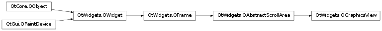

QGraphicsView¶
Inherited by: QtCharts.QChartView
Synopsis¶
Functions¶
- def
alignment() - def
backgroundBrush() - def
cacheMode() - def
centerOn(item) - def
centerOn(pos) - def
centerOn(x, y) - def
dragMode() - def
ensureVisible(item[, xmargin=50[, ymargin=50]]) - def
ensureVisible(rect[, xmargin=50[, ymargin=50]]) - def
ensureVisible(x, y, w, h[, xmargin=50[, ymargin=50]]) - def
fitInView(item[, aspectRadioMode=Qt.IgnoreAspectRatio]) - def
fitInView(rect[, aspectRadioMode=Qt.IgnoreAspectRatio]) - def
fitInView(x, y, w, h[, aspectRadioMode=Qt.IgnoreAspectRatio]) - def
foregroundBrush() - def
isInteractive() - def
isTransformed() - def
itemAt(pos) - def
itemAt(x, y) - def
items() - def
items(path[, mode=Qt.IntersectsItemShape]) - def
items(polygon[, mode=Qt.IntersectsItemShape]) - def
items(pos) - def
items(rect[, mode=Qt.IntersectsItemShape]) - def
items(x, y) - def
items(x, y, w, h[, mode=Qt.IntersectsItemShape]) - def
mapFromScene(path) - def
mapFromScene(point) - def
mapFromScene(polygon) - def
mapFromScene(rect) - def
mapFromScene(x, y) - def
mapFromScene(x, y, w, h) - def
mapToScene(path) - def
mapToScene(point) - def
mapToScene(polygon) - def
mapToScene(rect) - def
mapToScene(x, y) - def
mapToScene(x, y, w, h) - def
matrix() - def
optimizationFlags() - def
render(painter[, target=QRectF()[, source=QRect()[, aspectRatioMode=Qt.KeepAspectRatio]]]) - def
renderHints() - def
resetCachedContent() - def
resetMatrix() - def
resetTransform() - def
resizeAnchor() - def
rotate(angle) - def
rubberBandRect() - def
rubberBandSelectionMode() - def
scale(sx, sy) - def
scene() - def
sceneRect() - def
setAlignment(alignment) - def
setBackgroundBrush(brush) - def
setCacheMode(mode) - def
setDragMode(mode) - def
setForegroundBrush(brush) - def
setInteractive(allowed) - def
setMatrix(matrix[, combine=false]) - def
setOptimizationFlag(flag[, enabled=true]) - def
setOptimizationFlags(flags) - def
setRenderHint(hint[, enabled=true]) - def
setRenderHints(hints) - def
setResizeAnchor(anchor) - def
setRubberBandSelectionMode(mode) - def
setScene(scene) - def
setSceneRect(rect) - def
setSceneRect(x, y, w, h) - def
setTransform(matrix[, combine=false]) - def
setTransformationAnchor(anchor) - def
setViewportUpdateMode(mode) - def
shear(sh, sv) - def
transform() - def
transformationAnchor() - def
translate(dx, dy) - def
viewportTransform() - def
viewportUpdateMode()
Virtual functions¶
- def
drawBackground(painter, rect) - def
drawForeground(painter, rect) - def
drawItems(painter, items, options)
Slots¶
- def
invalidateScene([rect=QRectF()[, layers=QGraphicsScene.AllLayers]]) - def
updateScene(rects) - def
updateSceneRect(rect)
Signals¶
- def
rubberBandChanged(viewportRect, fromScenePoint, toScenePoint)
Detailed Description¶
The
PySide2.QtWidgets.QGraphicsViewclass provides a widget for displaying the contents of aPySide2.QtWidgets.QGraphicsScene.
PySide2.QtWidgets.QGraphicsViewvisualizes the contents of aPySide2.QtWidgets.QGraphicsScenein a scrollable viewport. To create a scene with geometrical items, seePySide2.QtWidgets.QGraphicsScene‘s documentation.PySide2.QtWidgets.QGraphicsViewis part of the Graphics View Framework .To visualize a scene, you start by constructing a
PySide2.QtWidgets.QGraphicsViewobject, passing the address of the scene you want to visualize toPySide2.QtWidgets.QGraphicsView‘s constructor. Alternatively, you can callPySide2.QtWidgets.QGraphicsView.setScene()to set the scene at a later point. After you callPySide2.QtWidgets.QWidget.show(), the view will by default scroll to the center of the scene and display any items that are visible at this point. For example:scene = QGraphicsScene() scene.addText("Hello, world!") view = QGraphicsView(scene) view.show()You can explicitly scroll to any position on the scene by using the scroll bars, or by calling
PySide2.QtWidgets.QGraphicsView.centerOn(). By passing a point toPySide2.QtWidgets.QGraphicsView.centerOn(),PySide2.QtWidgets.QGraphicsViewwill scroll its viewport to ensure that the point is centered in the view. An overload is provided for scrolling to aPySide2.QtWidgets.QGraphicsItem, in which casePySide2.QtWidgets.QGraphicsViewwill see to that the center of the item is centered in the view. If all you want is to ensure that a certain area is visible, (but not necessarily centered,) you can callPySide2.QtWidgets.QGraphicsView.ensureVisible()instead.
PySide2.QtWidgets.QGraphicsViewcan be used to visualize a whole scene, or only parts of it. The visualized area is by default detected automatically when the view is displayed for the first time (by callingQGraphicsScene.itemsBoundingRect()). To set the visualized area rectangle yourself, you can callPySide2.QtWidgets.QGraphicsView.setSceneRect(). This will adjust the scroll bars’ ranges appropriately. Note that although the scene supports a virtually unlimited size, the range of the scroll bars will never exceed the range of an integer (INT_MIN, INT_MAX).
PySide2.QtWidgets.QGraphicsViewvisualizes the scene by callingPySide2.QtWidgets.QGraphicsView.render(). By default, the items are drawn onto the viewport by using a regularPySide2.QtGui.QPainter, and using default render hints. To change the default render hints thatPySide2.QtWidgets.QGraphicsViewpasses toPySide2.QtGui.QPainterwhen painting items, you can callPySide2.QtWidgets.QGraphicsView.setRenderHints().By default,
PySide2.QtWidgets.QGraphicsViewprovides a regularPySide2.QtWidgets.QWidgetfor the viewport widget. You can access this widget by callingPySide2.QtWidgets.QAbstractScrollArea.viewport(), or you can replace it by callingPySide2.QtWidgets.QAbstractScrollArea.setViewport(). To render using OpenGL, simply callPySide2.QtWidgets.QAbstractScrollArea.setViewport()(newPySide2.QtOpenGL.QGLWidget).PySide2.QtWidgets.QGraphicsViewtakes ownership of the viewport widget.
PySide2.QtWidgets.QGraphicsViewsupports affine transformations, usingPySide2.QtGui.QTransform. You can either pass a matrix toPySide2.QtWidgets.QGraphicsView.setTransform(), or you can call one of the convenience functionsPySide2.QtWidgets.QGraphicsView.rotate(),PySide2.QtWidgets.QGraphicsView.scale(),PySide2.QtWidgets.QGraphicsView.translate()orPySide2.QtWidgets.QGraphicsView.shear(). The most two common transformations are scaling, which is used to implement zooming, and rotation.PySide2.QtWidgets.QGraphicsViewkeeps the center of the view fixed during a transformation. Because of the scene alignment (setAligment()), translating the view will have no visual impact.You can interact with the items on the scene by using the mouse and keyboard.
PySide2.QtWidgets.QGraphicsViewtranslates the mouse and key events into scene events, (events that inheritPySide2.QtWidgets.QGraphicsSceneEvent,), and forward them to the visualized scene. In the end, it’s the individual item that handles the events and reacts to them. For example, if you click on a selectable item, the item will typically let the scene know that it has been selected, and it will also redraw itself to display a selection rectangle. Similiary, if you click and drag the mouse to move a movable item, it’s the item that handles the mouse moves and moves itself. Item interaction is enabled by default, and you can toggle it by callingPySide2.QtWidgets.QGraphicsView.setInteractive().You can also provide your own custom scene interaction, by creating a subclass of
PySide2.QtWidgets.QGraphicsView, and reimplementing the mouse and key event handlers. To simplify how you programmatically interact with items in the view,PySide2.QtWidgets.QGraphicsViewprovides the mapping functionsPySide2.QtWidgets.QGraphicsView.mapToScene()andPySide2.QtWidgets.QGraphicsView.mapFromScene(), and the item accessorsPySide2.QtWidgets.QGraphicsView.items()andPySide2.QtWidgets.QGraphicsView.itemAt(). These functions allow you to map points, rectangles, polygons and paths between view coordinates and scene coordinates, and to find items on the scene using view coordinates.
-
class
PySide2.QtWidgets.QGraphicsView(scene[, parent=nullptr])¶ -
class
PySide2.QtWidgets.QGraphicsView([parent=nullptr]) Parameters: - scene –
PySide2.QtWidgets.QGraphicsScene - parent –
PySide2.QtWidgets.QWidget
Constructs a
PySide2.QtWidgets.QGraphicsViewand sets the visualized scene toscene.parentis passed toPySide2.QtWidgets.QWidget‘s constructor.Constructs a
PySide2.QtWidgets.QGraphicsView.parentis passed toPySide2.QtWidgets.QWidget‘s constructor.- scene –
-
PySide2.QtWidgets.QGraphicsView.ViewportAnchor¶ This enums describe the possible anchors that
PySide2.QtWidgets.QGraphicsViewcan use when the user resizes the view or when the view is transformed.Constant Description QGraphicsView.NoAnchor No anchor, i.e. the view leaves the scene’s position unchanged. QGraphicsView.AnchorViewCenter The scene point at the center of the view is used as the anchor. QGraphicsView.AnchorUnderMouse The point under the mouse is used as the anchor.
-
PySide2.QtWidgets.QGraphicsView.CacheModeFlag¶ This enum describes the flags that you can set for a
PySide2.QtWidgets.QGraphicsView‘s cache mode.Constant Description QGraphicsView.CacheNone All painting is done directly onto the viewport. QGraphicsView.CacheBackground The background is cached. This affects both custom backgrounds, and backgrounds based on the PySide2.QtWidgets.QGraphicsView.backgroundBrush()property. When this flag is enabled,PySide2.QtWidgets.QGraphicsViewwill allocate one pixmap with the full size of the viewport.
-
PySide2.QtWidgets.QGraphicsView.DragMode¶ This enum describes the default action for the view when pressing and dragging the mouse over the viewport.
Constant Description QGraphicsView.NoDrag Nothing happens; the mouse event is ignored. QGraphicsView.ScrollHandDrag The cursor changes into a pointing hand, and dragging the mouse around will scroll the scrolbars. This mode works both in PySide2.QtWidgets.QGraphicsView.interactive()and non-interactive mode.QGraphicsView.RubberBandDrag A rubber band will appear. Dragging the mouse will set the rubber band geometry, and all items covered by the rubber band are selected. This mode is disabled for non-interactive views.
-
PySide2.QtWidgets.QGraphicsView.ViewportUpdateMode¶ This enum describes how
PySide2.QtWidgets.QGraphicsViewupdates its viewport when the scene contents change or are exposed.Constant Description QGraphicsView.FullViewportUpdate When any visible part of the scene changes or is reexposed, PySide2.QtWidgets.QGraphicsViewwill update the entire viewport. This approach is fastest whenPySide2.QtWidgets.QGraphicsViewspends more time figuring out what to draw than it would spend drawing (e.g., when very many small items are repeatedly updated). This is the preferred update mode for viewports that do not support partial updates, such asPySide2.QtOpenGL.QGLWidget, and for viewports that need to disable scroll optimization.QGraphicsView.MinimalViewportUpdate PySide2.QtWidgets.QGraphicsViewwill determine the minimal viewport region that requires a redraw, minimizing the time spent drawing by avoiding a redraw of areas that have not changed. This isPySide2.QtWidgets.QGraphicsView‘s default mode. Although this approach provides the best performance in general, if there are many small visible changes on the scene,PySide2.QtWidgets.QGraphicsViewmight end up spending more time finding the minimal approach than it will spend drawing.QGraphicsView.SmartViewportUpdate PySide2.QtWidgets.QGraphicsViewwill attempt to find an optimal update mode by analyzing the areas that require a redraw.QGraphicsView.BoundingRectViewportUpdate The bounding rectangle of all changes in the viewport will be redrawn. This mode has the advantage that PySide2.QtWidgets.QGraphicsViewsearches only one region for changes, minimizing time spent determining what needs redrawing. The disadvantage is that areas that have not changed also need to be redrawn.QGraphicsView.NoViewportUpdate PySide2.QtWidgets.QGraphicsViewwill never update its viewport when the scene changes; the user is expected to control all updates. This mode disables all (potentially slow) item visibility testing inPySide2.QtWidgets.QGraphicsView, and is suitable for scenes that either require a fixed frame rate, or where the viewport is otherwise updated externally.
-
PySide2.QtWidgets.QGraphicsView.OptimizationFlag¶ This enum describes flags that you can enable to improve rendering performance in
PySide2.QtWidgets.QGraphicsView. By default, none of these flags are set. Note that setting a flag usually imposes a side effect, and this effect can vary between paint devices and platforms.Constant Description QGraphicsView.DontClipPainter This value is obsolete and has no effect. QGraphicsView.DontSavePainterState When rendering, PySide2.QtWidgets.QGraphicsViewprotects the painter state (seeQPainter.save()) when rendering the background or foreground, and when rendering each item. This allows you to leave the painter in an altered state (i.e., you can callQPainter.setPen()orQPainter.setBrush()without restoring the state after painting). However, if the items consistently do restore the state, you should enable this flag to preventPySide2.QtWidgets.QGraphicsViewfrom doing the same.QGraphicsView.DontAdjustForAntialiasing Disables PySide2.QtWidgets.QGraphicsView‘s antialiasing auto-adjustment of exposed areas. Items that render antialiased lines on the boundaries of theirQGraphicsItem.boundingRect()can end up rendering parts of the line outside. To prevent rendering artifacts,PySide2.QtWidgets.QGraphicsViewexpands all exposed regions by 2 pixels in all directions. If you enable this flag,PySide2.QtWidgets.QGraphicsViewwill no longer perform these adjustments, minimizing the areas that require redrawing, which improves performance. A common side effect is that items that do draw with antialiasing can leave painting traces behind on the scene as they are moved.QGraphicsView.IndirectPainting Since Qt 4.6, restore the old painting algorithm that calls QGraphicsView.drawItems()andQGraphicsScene.drawItems(). To be used only for compatibility with old code.
-
PySide2.QtWidgets.QGraphicsView.alignment()¶ Return type: PySide2.QtCore.Qt.Alignment
-
PySide2.QtWidgets.QGraphicsView.backgroundBrush()¶ Return type: PySide2.QtGui.QBrush
-
PySide2.QtWidgets.QGraphicsView.cacheMode()¶ Return type: PySide2.QtWidgets.QGraphicsView.CacheMode
-
PySide2.QtWidgets.QGraphicsView.centerOn(x, y)¶ Parameters: - x –
PySide2.QtCore.qreal - y –
PySide2.QtCore.qreal
This is an overloaded function.
This function is provided for convenience. It’s equivalent to calling
PySide2.QtWidgets.QGraphicsView.centerOn()(PySide2.QtCore.QPointF(x,y)).- x –
-
PySide2.QtWidgets.QGraphicsView.centerOn(item) Parameters: item – PySide2.QtWidgets.QGraphicsItemThis is an overloaded function.
Scrolls the contents of the viewport to ensure that
itemis centered in the view.
-
PySide2.QtWidgets.QGraphicsView.centerOn(pos) Parameters: pos – PySide2.QtCore.QPointFScrolls the contents of the viewport to ensure that the scene coordinate
pos, is centered in the view.Because
posis a floating point coordinate, and the scroll bars operate on integer coordinates, the centering is only an approximation.Note
If the item is close to or outside the border, it will be visible in the view, but not centered.
-
PySide2.QtWidgets.QGraphicsView.dragMode()¶ Return type: PySide2.QtWidgets.QGraphicsView.DragMode
-
PySide2.QtWidgets.QGraphicsView.drawBackground(painter, rect)¶ Parameters: - painter –
PySide2.QtGui.QPainter - rect –
PySide2.QtCore.QRectF
Draws the background of the scene using
painter, before any items and the foreground are drawn. Reimplement this function to provide a custom background for this view.If all you want is to define a color, texture or gradient for the background, you can call
PySide2.QtWidgets.QGraphicsView.setBackgroundBrush()instead.All painting is done in scene coordinates.
rectis the exposed rectangle.The default implementation fills
rectusing the view’sPySide2.QtWidgets.QGraphicsView.backgroundBrush(). If no such brush is defined (the default), the scene’s function is called instead.- painter –
-
PySide2.QtWidgets.QGraphicsView.drawForeground(painter, rect)¶ Parameters: - painter –
PySide2.QtGui.QPainter - rect –
PySide2.QtCore.QRectF
Draws the foreground of the scene using
painter, after the background and all items are drawn. Reimplement this function to provide a custom foreground for this view.If all you want is to define a color, texture or gradient for the foreground, you can call
PySide2.QtWidgets.QGraphicsView.setForegroundBrush()instead.All painting is done in scene coordinates.
rectis the exposed rectangle.The default implementation fills
rectusing the view’sPySide2.QtWidgets.QGraphicsView.foregroundBrush(). If no such brush is defined (the default), the scene’s function is called instead.- painter –
-
PySide2.QtWidgets.QGraphicsView.drawItems(painter, items, options)¶ Parameters: - painter –
PySide2.QtGui.QPainter - items –
QGraphicsItem[] - options –
QStyleOptionGraphicsItem[]
Draws the items
itemsin the scene usingpainter, after the background and before the foreground are drawn.numItemsis the number of items initemsand options inoptions.optionsis a list of styleoptions; one for each item. Reimplement this function to provide custom item drawing for this view.The default implementation calls the scene’s function.
Since Qt 4.6, this function is not called anymore unless the
QGraphicsView.IndirectPaintingflag is given as an Optimization flag.See also
PySide2.QtWidgets.QGraphicsView.drawForeground()PySide2.QtWidgets.QGraphicsView.drawBackground()QGraphicsScene.drawItems()- painter –
-
PySide2.QtWidgets.QGraphicsView.ensureVisible(x, y, w, h[, xmargin=50[, ymargin=50]])¶ Parameters: - x –
PySide2.QtCore.qreal - y –
PySide2.QtCore.qreal - w –
PySide2.QtCore.qreal - h –
PySide2.QtCore.qreal - xmargin –
PySide2.QtCore.int - ymargin –
PySide2.QtCore.int
This is an overloaded function.
This function is provided for convenience. It’s equivalent to calling
PySide2.QtWidgets.QGraphicsView.ensureVisible()(PySide2.QtCore.QRectF(x,y,w,h),xmargin,ymargin).- x –
-
PySide2.QtWidgets.QGraphicsView.ensureVisible(rect[, xmargin=50[, ymargin=50]]) Parameters: - rect –
PySide2.QtCore.QRectF - xmargin –
PySide2.QtCore.int - ymargin –
PySide2.QtCore.int
Scrolls the contents of the viewport so that the scene rectangle
rectis visible, with margins specified in pixels byxmarginandymargin. If the specified rect cannot be reached, the contents are scrolled to the nearest valid position. The default value for both margins is 50 pixels.- rect –
-
PySide2.QtWidgets.QGraphicsView.ensureVisible(item[, xmargin=50[, ymargin=50]]) Parameters: - item –
PySide2.QtWidgets.QGraphicsItem - xmargin –
PySide2.QtCore.int - ymargin –
PySide2.QtCore.int
This is an overloaded function.
Scrolls the contents of the viewport so that the center of item
itemis visible, with margins specified in pixels byxmarginandymargin. If the specified point cannot be reached, the contents are scrolled to the nearest valid position. The default value for both margins is 50 pixels.- item –
-
PySide2.QtWidgets.QGraphicsView.fitInView(x, y, w, h[, aspectRadioMode=Qt.IgnoreAspectRatio])¶ Parameters: - x –
PySide2.QtCore.qreal - y –
PySide2.QtCore.qreal - w –
PySide2.QtCore.qreal - h –
PySide2.QtCore.qreal - aspectRadioMode –
PySide2.QtCore.Qt.AspectRatioMode
This is an overloaded function.
This convenience function is equivalent to calling
PySide2.QtWidgets.QGraphicsView.fitInView()(PySide2.QtCore.QRectF(x,y,w,h),aspectRatioMode).- x –
-
PySide2.QtWidgets.QGraphicsView.fitInView(rect[, aspectRadioMode=Qt.IgnoreAspectRatio]) Parameters: - rect –
PySide2.QtCore.QRectF - aspectRadioMode –
PySide2.QtCore.Qt.AspectRatioMode
Scales the view matrix and scrolls the scroll bars to ensure that the scene rectangle
rectfits inside the viewport.rectmust be inside the scene rect; otherwise, cannot guarantee that the whole rect is visible.This function keeps the view’s rotation, translation, or shear. The view is scaled according to
aspectRatioMode.rectwill be centered in the view if it does not fit tightly.It’s common to call from inside a reimplementation of
PySide2.QtWidgets.QGraphicsView.resizeEvent(), to ensure that the whole scene, or parts of the scene, scales automatically to fit the new size of the viewport as the view is resized. Note though, that calling from insidePySide2.QtWidgets.QGraphicsView.resizeEvent()can lead to unwanted resize recursion, if the new transformation toggles the automatic state of the scrollbars. You can toggle the scrollbar policies to always on or always off to prevent this (seePySide2.QtWidgets.QAbstractScrollArea.horizontalScrollBarPolicy()andPySide2.QtWidgets.QAbstractScrollArea.verticalScrollBarPolicy()).If
rectis empty, or if the viewport is too small, this function will do nothing.- rect –
-
PySide2.QtWidgets.QGraphicsView.fitInView(item[, aspectRadioMode=Qt.IgnoreAspectRatio]) Parameters: - item –
PySide2.QtWidgets.QGraphicsItem - aspectRadioMode –
PySide2.QtCore.Qt.AspectRatioMode
This is an overloaded function.
Ensures that
itemfits tightly inside the view, scaling the view according toaspectRatioMode.- item –
-
PySide2.QtWidgets.QGraphicsView.foregroundBrush()¶ Return type: PySide2.QtGui.QBrush
-
PySide2.QtWidgets.QGraphicsView.invalidateScene([rect=QRectF()[, layers=QGraphicsScene.AllLayers]])¶ Parameters: - rect –
PySide2.QtCore.QRectF - layers –
PySide2.QtWidgets.QGraphicsScene.SceneLayers
Invalidates and schedules a redraw of
layersinsiderect.rectis in scene coordinates. Any cached content forlayersinsiderectis unconditionally invalidated and redrawn.You can call this function to notify
PySide2.QtWidgets.QGraphicsViewof changes to the background or the foreground of the scene. It is commonly used for scenes with tile-based backgrounds to notify changes whenPySide2.QtWidgets.QGraphicsViewhas enabled background caching.Note that
PySide2.QtWidgets.QGraphicsViewcurrently supports background caching only (seeQGraphicsView.CacheBackground). This function is equivalent to callingPySide2.QtWidgets.QWidget.update()if any layer butQGraphicsScene.BackgroundLayeris passed.- rect –
-
PySide2.QtWidgets.QGraphicsView.isInteractive()¶ Return type: PySide2.QtCore.bool
-
PySide2.QtWidgets.QGraphicsView.isTransformed()¶ Return type: PySide2.QtCore.boolReturns
trueif the view is transformed (i.e., a non-identity transform has been assigned, or the scrollbars are adjusted).
-
PySide2.QtWidgets.QGraphicsView.itemAt(pos)¶ Parameters: pos – PySide2.QtCore.QPointReturn type: PySide2.QtWidgets.QGraphicsItemReturns the item at position
pos, which is in viewport coordinates. If there are several items at this position, this function returns the topmost item.Example:
def mousePressEvent(self, event): if (item = itemAt(event.pos()): print "You clicked on item", item else: print "You didn't click on an item."
See also
-
PySide2.QtWidgets.QGraphicsView.itemAt(x, y) Parameters: - x –
PySide2.QtCore.int - y –
PySide2.QtCore.int
Return type: This is an overloaded function.
This function is provided for convenience. It’s equivalent to calling
PySide2.QtWidgets.QGraphicsView.itemAt()(PySide2.QtCore.QPoint(x,y)).- x –
-
PySide2.QtWidgets.QGraphicsView.items(rect[, mode=Qt.IntersectsItemShape])¶ Parameters: - rect –
PySide2.QtCore.QRect - mode –
PySide2.QtCore.Qt.ItemSelectionMode
Return type: This is an overloaded function.
Returns a list of all the items that, depending on
mode, are either contained by or intersect withrect.rectis in viewport coordinates.The default value for
modeisQt.IntersectsItemShape; all items whose exact shape intersects with or is contained byrectare returned.The items are sorted in descending stacking order (i.e., the first item in the returned list is the uppermost item).
- rect –
-
PySide2.QtWidgets.QGraphicsView.items(x, y, w, h[, mode=Qt.IntersectsItemShape]) Parameters: - x –
PySide2.QtCore.int - y –
PySide2.QtCore.int - w –
PySide2.QtCore.int - h –
PySide2.QtCore.int - mode –
PySide2.QtCore.Qt.ItemSelectionMode
Return type: This convenience function is equivalent to calling items(
PySide2.QtCore.QRectF(x,y,w,h),mode).- x –
-
PySide2.QtWidgets.QGraphicsView.items(polygon[, mode=Qt.IntersectsItemShape]) Parameters: - polygon –
PySide2.QtGui.QPolygon - mode –
PySide2.QtCore.Qt.ItemSelectionMode
Return type: This is an overloaded function.
Returns a list of all the items that, depending on
mode, are either contained by or intersect withpolygon.polygonis in viewport coordinates.The default value for
modeisQt.IntersectsItemShape; all items whose exact shape intersects with or is contained bypolygonare returned.The items are sorted by descending stacking order (i.e., the first item in the returned list is the uppermost item).
- polygon –
-
PySide2.QtWidgets.QGraphicsView.items(x, y) Parameters: - x –
PySide2.QtCore.int - y –
PySide2.QtCore.int
Return type: This function is provided for convenience. It’s equivalent to calling items(
PySide2.QtCore.QPoint(x,y)).- x –
-
PySide2.QtWidgets.QGraphicsView.items() Return type: Returns a list of all the items in the associated scene, in descending stacking order (i.e., the first item in the returned list is the uppermost item).
See also
QGraphicsScene.items()Sorting
-
PySide2.QtWidgets.QGraphicsView.items(pos) Parameters: pos – PySide2.QtCore.QPointReturn type: Returns a list of all the items at the position
posin the view. The items are listed in descending stacking order (i.e., the first item in the list is the uppermost item, and the last item is the lowermost item).posis in viewport coordinates.This function is most commonly called from within mouse event handlers in a subclass in
PySide2.QtWidgets.QGraphicsView.posis in untransformed viewport coordinates, just likeQMouseEvent.pos().def mousePressEvent(self, event): print "There are", items(event->pos()).size(), "items at position", mapToScene(event->pos())
See also
QGraphicsScene.items()Sorting
-
PySide2.QtWidgets.QGraphicsView.items(path[, mode=Qt.IntersectsItemShape]) Parameters: - path –
PySide2.QtGui.QPainterPath - mode –
PySide2.QtCore.Qt.ItemSelectionMode
Return type: This is an overloaded function.
Returns a list of all the items that, depending on
mode, are either contained by or intersect withpath.pathis in viewport coordinates.The default value for
modeisQt.IntersectsItemShape; all items whose exact shape intersects with or is contained bypathare returned.- path –
-
PySide2.QtWidgets.QGraphicsView.mapFromScene(x, y)¶ Parameters: - x –
PySide2.QtCore.qreal - y –
PySide2.QtCore.qreal
Return type: This function is provided for convenience. It’s equivalent to calling
PySide2.QtWidgets.QGraphicsView.mapFromScene()(PySide2.QtCore.QPointF(x,y)).- x –
-
PySide2.QtWidgets.QGraphicsView.mapFromScene(rect) Parameters: rect – PySide2.QtCore.QRectFReturn type: PySide2.QtGui.QPolygonReturns the scene rectangle
rectto a viewport coordinate polygon.
-
PySide2.QtWidgets.QGraphicsView.mapFromScene(x, y, w, h) Parameters: - x –
PySide2.QtCore.qreal - y –
PySide2.QtCore.qreal - w –
PySide2.QtCore.qreal - h –
PySide2.QtCore.qreal
Return type: This function is provided for convenience. It’s equivalent to calling
PySide2.QtWidgets.QGraphicsView.mapFromScene()(PySide2.QtCore.QRectF(x,y,w,h)).- x –
-
PySide2.QtWidgets.QGraphicsView.mapFromScene(path) Parameters: path – PySide2.QtGui.QPainterPathReturn type: PySide2.QtGui.QPainterPathReturns the scene coordinate painter path
pathto a viewport coordinate painter path.
-
PySide2.QtWidgets.QGraphicsView.mapFromScene(polygon) Parameters: polygon – PySide2.QtGui.QPolygonFReturn type: PySide2.QtGui.QPolygonReturns the scene coordinate polygon
polygonto a viewport coordinate polygon.
-
PySide2.QtWidgets.QGraphicsView.mapFromScene(point) Parameters: point – PySide2.QtCore.QPointFReturn type: PySide2.QtCore.QPointReturns the scene coordinate
pointto viewport coordinates.
-
PySide2.QtWidgets.QGraphicsView.mapToScene(x, y, w, h)¶ Parameters: - x –
PySide2.QtCore.int - y –
PySide2.QtCore.int - w –
PySide2.QtCore.int - h –
PySide2.QtCore.int
Return type: This function is provided for convenience. It’s equivalent to calling
PySide2.QtWidgets.QGraphicsView.mapToScene()(PySide2.QtCore.QRect(x,y,w,h)).- x –
-
PySide2.QtWidgets.QGraphicsView.mapToScene(x, y) Parameters: - x –
PySide2.QtCore.int - y –
PySide2.QtCore.int
Return type: This function is provided for convenience. It’s equivalent to calling
PySide2.QtWidgets.QGraphicsView.mapToScene()(PySide2.QtCore.QPoint(x,y)).- x –
-
PySide2.QtWidgets.QGraphicsView.mapToScene(rect) Parameters: rect – PySide2.QtCore.QRectReturn type: PySide2.QtGui.QPolygonFReturns the viewport rectangle
rectmapped to a scene coordinate polygon.
-
PySide2.QtWidgets.QGraphicsView.mapToScene(polygon) Parameters: polygon – PySide2.QtGui.QPolygonReturn type: PySide2.QtGui.QPolygonFReturns the viewport polygon
polygonmapped to a scene coordinate polygon.
-
PySide2.QtWidgets.QGraphicsView.mapToScene(point) Parameters: point – PySide2.QtCore.QPointReturn type: PySide2.QtCore.QPointFReturns the viewport coordinate
pointmapped to scene coordinates.Note: It can be useful to map the whole rectangle covered by the pixel at
pointinstead of the point itself. To do this, you can call (PySide2.QtCore.QRect(point,PySide2.QtCore.QSize(2, 2))).
-
PySide2.QtWidgets.QGraphicsView.mapToScene(path) Parameters: path – PySide2.QtGui.QPainterPathReturn type: PySide2.QtGui.QPainterPathReturns the viewport painter path
pathmapped to a scene coordinate painter path.
-
PySide2.QtWidgets.QGraphicsView.matrix()¶ Return type: PySide2.QtGui.QMatrixReturns the current transformation matrix for the view. If no current transformation is set, the identity matrix is returned.
-
PySide2.QtWidgets.QGraphicsView.optimizationFlags()¶ Return type: PySide2.QtWidgets.QGraphicsView.OptimizationFlags
-
PySide2.QtWidgets.QGraphicsView.render(painter[, target=QRectF()[, source=QRect()[, aspectRatioMode=Qt.KeepAspectRatio]]])¶ Parameters: - painter –
PySide2.QtGui.QPainter - target –
PySide2.QtCore.QRectF - source –
PySide2.QtCore.QRect - aspectRatioMode –
PySide2.QtCore.Qt.AspectRatioMode
Renders the
sourcerect, which is in view coordinates, from the scene intotarget, which is in paint device coordinates, usingpainter. This function is useful for capturing the contents of the view onto a paint device, such as aPySide2.QtGui.QImage(e.g., to take a screenshot), or for printing toPySide2.QtPrintSupport.QPrinter. For example:scene = QGraphicsScene() scene.addItem(... ... view = QGraphicsView(scene) view.show() ... printer = QPrinter(QPrinter.HighResolution) printer.setPageSize(QPrinter.A4) painter = QPainter(printer) # print, fitting the viewport contents into a full page view.render(painter) # print the upper half of the viewport into the lower. # half of the page. viewport = view.viewport()->rect() view.render(painter, QRectF(0, printer.height() / 2, printer.width(), printer.height() / 2), viewport.adjusted(0, 0, 0, -viewport.height() / 2))
If
sourceis a null rect, this function will usePySide2.QtWidgets.QAbstractScrollArea.viewport()->PySide2.QtWidgets.QWidget.rect()to determine what to draw. Iftargetis a null rect, the full dimensions ofpainter‘s paint device (e.g., for aPySide2.QtPrintSupport.QPrinter, the page size) will be used.The source rect contents will be transformed according to
aspectRatioModeto fit into the target rect. By default, the aspect ratio is kept, andsourceis scaled to fit intarget.See also
- painter –
-
PySide2.QtWidgets.QGraphicsView.renderHints()¶ Return type: PySide2.QtGui.QPainter.RenderHints
-
PySide2.QtWidgets.QGraphicsView.resetCachedContent()¶ Resets any cached content. Calling this function will clear
PySide2.QtWidgets.QGraphicsView‘s cache. If the current cache mode isCacheNone, this function does nothing.This function is called automatically for you when the
PySide2.QtWidgets.QGraphicsView.backgroundBrush()orQGraphicsScene.backgroundBrushproperties change; you only need to call this function if you have reimplementedQGraphicsScene.drawBackground()orQGraphicsView.drawBackground()to draw a custom background, and need to trigger a full redraw.
-
PySide2.QtWidgets.QGraphicsView.resetMatrix()¶ Resets the view transformation matrix to the identity matrix.
-
PySide2.QtWidgets.QGraphicsView.resetTransform()¶ Resets the view transformation to the identity matrix.
-
PySide2.QtWidgets.QGraphicsView.resizeAnchor()¶ Return type: PySide2.QtWidgets.QGraphicsView.ViewportAnchor
-
PySide2.QtWidgets.QGraphicsView.rotate(angle)¶ Parameters: angle – PySide2.QtCore.qrealRotates the current view transformation
angledegrees clockwise.
-
PySide2.QtWidgets.QGraphicsView.rubberBandChanged(viewportRect, fromScenePoint, toScenePoint)¶ Parameters: - viewportRect –
PySide2.QtCore.QRect - fromScenePoint –
PySide2.QtCore.QPointF - toScenePoint –
PySide2.QtCore.QPointF
- viewportRect –
-
PySide2.QtWidgets.QGraphicsView.rubberBandRect()¶ Return type: PySide2.QtCore.QRectThis functions returns the current rubber band area (in viewport coordinates) if the user is currently doing an itemselection with rubber band. When the user is not using the rubber band this functions returns (a null) QRectF().
Notice that part of this
PySide2.QtCore.QRectcan be outise the visual viewport. It can e.g contain negative values.
-
PySide2.QtWidgets.QGraphicsView.rubberBandSelectionMode()¶ Return type: PySide2.QtCore.Qt.ItemSelectionMode
-
PySide2.QtWidgets.QGraphicsView.scale(sx, sy)¶ Parameters: - sx –
PySide2.QtCore.qreal - sy –
PySide2.QtCore.qreal
Scales the current view transformation by (
sx,sy).- sx –
-
PySide2.QtWidgets.QGraphicsView.scene()¶ Return type: PySide2.QtWidgets.QGraphicsSceneReturns a pointer to the scene that is currently visualized in the view. If no scene is currently visualized, 0 is returned.
-
PySide2.QtWidgets.QGraphicsView.sceneRect()¶ Return type: PySide2.QtCore.QRectF
-
PySide2.QtWidgets.QGraphicsView.setAlignment(alignment)¶ Parameters: alignment – PySide2.QtCore.Qt.Alignment
-
PySide2.QtWidgets.QGraphicsView.setBackgroundBrush(brush)¶ Parameters: brush – PySide2.QtGui.QBrush
-
PySide2.QtWidgets.QGraphicsView.setCacheMode(mode)¶ Parameters: mode – PySide2.QtWidgets.QGraphicsView.CacheMode
-
PySide2.QtWidgets.QGraphicsView.setDragMode(mode)¶ Parameters: mode – PySide2.QtWidgets.QGraphicsView.DragMode
-
PySide2.QtWidgets.QGraphicsView.setForegroundBrush(brush)¶ Parameters: brush – PySide2.QtGui.QBrush
-
PySide2.QtWidgets.QGraphicsView.setInteractive(allowed)¶ Parameters: allowed – PySide2.QtCore.bool
-
PySide2.QtWidgets.QGraphicsView.setMatrix(matrix[, combine=false])¶ Parameters: - matrix –
PySide2.QtGui.QMatrix - combine –
PySide2.QtCore.bool
Sets the view’s current transformation matrix to
matrix.If
combineis true, thenmatrixis combined with the current matrix; otherwise,matrixreplaces the current matrix.combineis false by default.The transformation matrix tranforms the scene into view coordinates. Using the default transformation, provided by the identity matrix, one pixel in the view represents one unit in the scene (e.g., a 10x10 rectangular item is drawn using 10x10 pixels in the view). If a 2x2 scaling matrix is applied, the scene will be drawn in 1:2 (e.g., a 10x10 rectangular item is then drawn using 20x20 pixels in the view).
Example:
scene = QGraphicsScene() scene.addText("GraphicsView rotated clockwise") view = QGraphicsView(scene) view.rotate(90) # the text is rendered with a 90 degree clockwise rotation view.show()
To simplify interation with items using a transformed view,
PySide2.QtWidgets.QGraphicsViewprovidesPySide2.QtWidgets.QWidget.mapTo()… andPySide2.QtWidgets.QWidget.mapFrom()… functions that can translate between scene and view coordinates. For example, you can callPySide2.QtWidgets.QGraphicsView.mapToScene()to map a view coordinate to a floating point scene coordinate, orPySide2.QtWidgets.QGraphicsView.mapFromScene()to map from floating point scene coordinates to view coordinates.- matrix –
-
PySide2.QtWidgets.QGraphicsView.setOptimizationFlag(flag[, enabled=true])¶ Parameters: - flag –
PySide2.QtWidgets.QGraphicsView.OptimizationFlag - enabled –
PySide2.QtCore.bool
Enables
flagifenabledis true; otherwise disablesflag.- flag –
-
PySide2.QtWidgets.QGraphicsView.setOptimizationFlags(flags)¶ Parameters: flags – PySide2.QtWidgets.QGraphicsView.OptimizationFlags
-
PySide2.QtWidgets.QGraphicsView.setRenderHint(hint[, enabled=true])¶ Parameters: - hint –
PySide2.QtGui.QPainter.RenderHint - enabled –
PySide2.QtCore.bool
If
enabledis true, the render hinthintis enabled; otherwise it is disabled.- hint –
-
PySide2.QtWidgets.QGraphicsView.setRenderHints(hints)¶ Parameters: hints – PySide2.QtGui.QPainter.RenderHints
-
PySide2.QtWidgets.QGraphicsView.setResizeAnchor(anchor)¶ Parameters: anchor – PySide2.QtWidgets.QGraphicsView.ViewportAnchor
-
PySide2.QtWidgets.QGraphicsView.setRubberBandSelectionMode(mode)¶ Parameters: mode – PySide2.QtCore.Qt.ItemSelectionMode
-
PySide2.QtWidgets.QGraphicsView.setScene(scene)¶ Parameters: scene – PySide2.QtWidgets.QGraphicsSceneSets the current scene to
scene. Ifsceneis already being viewed, this function does nothing.When a scene is set on a view, the
QGraphicsScene.changed()signal is automatically connected to this view’sPySide2.QtWidgets.QGraphicsView.updateScene()slot, and the view’s scroll bars are adjusted to fit the size of the scene.The view does not take ownership of
scene.
-
PySide2.QtWidgets.QGraphicsView.setSceneRect(x, y, w, h)¶ Parameters: - x –
PySide2.QtCore.qreal - y –
PySide2.QtCore.qreal - w –
PySide2.QtCore.qreal - h –
PySide2.QtCore.qreal
- x –
-
PySide2.QtWidgets.QGraphicsView.setSceneRect(rect) Parameters: rect – PySide2.QtCore.QRectF
-
PySide2.QtWidgets.QGraphicsView.setTransform(matrix[, combine=false])¶ Parameters: - matrix –
PySide2.QtGui.QTransform - combine –
PySide2.QtCore.bool
Sets the view’s current transformation matrix to
matrix.If
combineis true, thenmatrixis combined with the current matrix; otherwise,matrixreplaces the current matrix.combineis false by default.The transformation matrix tranforms the scene into view coordinates. Using the default transformation, provided by the identity matrix, one pixel in the view represents one unit in the scene (e.g., a 10x10 rectangular item is drawn using 10x10 pixels in the view). If a 2x2 scaling matrix is applied, the scene will be drawn in 1:2 (e.g., a 10x10 rectangular item is then drawn using 20x20 pixels in the view).
Example:
scene = QGraphicsScene() scene.addText("GraphicsView rotated clockwise") view = QGraphicsView(scene) view.rotate(90) # the text is rendered with a 90 degree clockwise rotation view.show()
To simplify interation with items using a transformed view,
PySide2.QtWidgets.QGraphicsViewprovidesPySide2.QtWidgets.QWidget.mapTo()… andPySide2.QtWidgets.QWidget.mapFrom()… functions that can translate between scene and view coordinates. For example, you can callPySide2.QtWidgets.QGraphicsView.mapToScene()to map a view coordiate to a floating point scene coordinate, orPySide2.QtWidgets.QGraphicsView.mapFromScene()to map from floating point scene coordinates to view coordinates.- matrix –
-
PySide2.QtWidgets.QGraphicsView.setTransformationAnchor(anchor)¶ Parameters: anchor – PySide2.QtWidgets.QGraphicsView.ViewportAnchor
-
PySide2.QtWidgets.QGraphicsView.setViewportUpdateMode(mode)¶ Parameters: mode – PySide2.QtWidgets.QGraphicsView.ViewportUpdateMode
-
PySide2.QtWidgets.QGraphicsView.shear(sh, sv)¶ Parameters: - sh –
PySide2.QtCore.qreal - sv –
PySide2.QtCore.qreal
Shears the current view transformation by (
sh,sv).- sh –
-
PySide2.QtWidgets.QGraphicsView.transform()¶ Return type: PySide2.QtGui.QTransformReturns the current transformation matrix for the view. If no current transformation is set, the identity matrix is returned.
-
PySide2.QtWidgets.QGraphicsView.transformationAnchor()¶ Return type: PySide2.QtWidgets.QGraphicsView.ViewportAnchor
-
PySide2.QtWidgets.QGraphicsView.translate(dx, dy)¶ Parameters: - dx –
PySide2.QtCore.qreal - dy –
PySide2.QtCore.qreal
Translates the current view transformation by (
dx,dy).- dx –
-
PySide2.QtWidgets.QGraphicsView.updateScene(rects)¶ Parameters: rects – Schedules an update of the scene rectangles
rects.See also
-
PySide2.QtWidgets.QGraphicsView.updateSceneRect(rect)¶ Parameters: rect – PySide2.QtCore.QRectFNotifies
PySide2.QtWidgets.QGraphicsViewthat the scene’s scene rect has changed.rectis the new scene rect. If the view already has an explicitly set scene rect, this function does nothing.
-
PySide2.QtWidgets.QGraphicsView.viewportTransform()¶ Return type: PySide2.QtGui.QTransformReturns a matrix that maps scene coordinates to viewport coordinates.
-
PySide2.QtWidgets.QGraphicsView.viewportUpdateMode()¶ Return type: PySide2.QtWidgets.QGraphicsView.ViewportUpdateMode
© 2018 The Qt Company Ltd. Documentation contributions included herein are the copyrights of their respective owners. The documentation provided herein is licensed under the terms of the GNU Free Documentation License version 1.3 as published by the Free Software Foundation. Qt and respective logos are trademarks of The Qt Company Ltd. in Finland and/or other countries worldwide. All other trademarks are property of their respective owners.